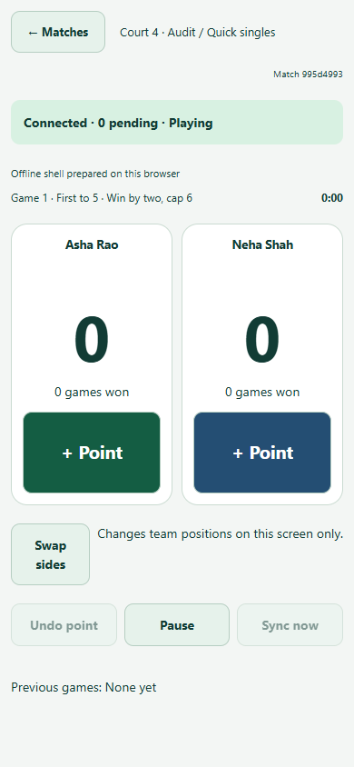
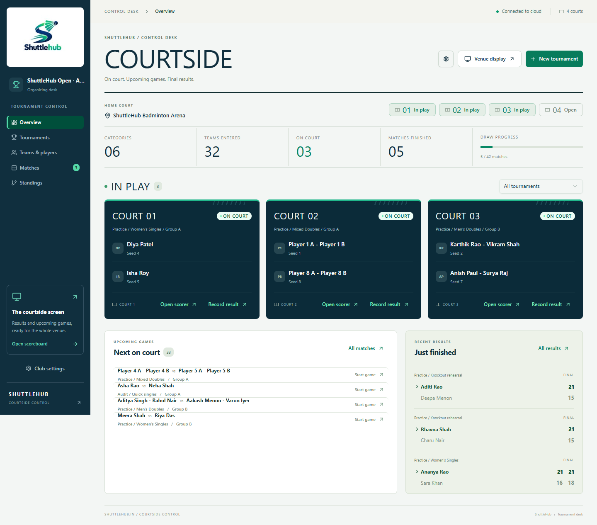
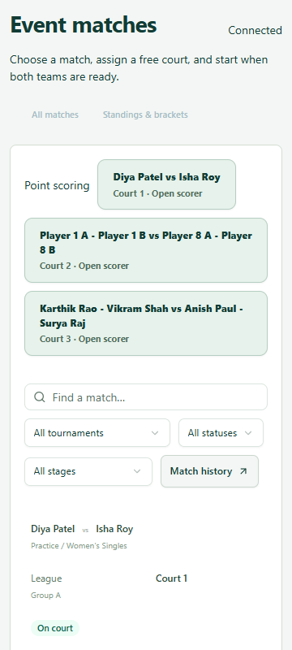
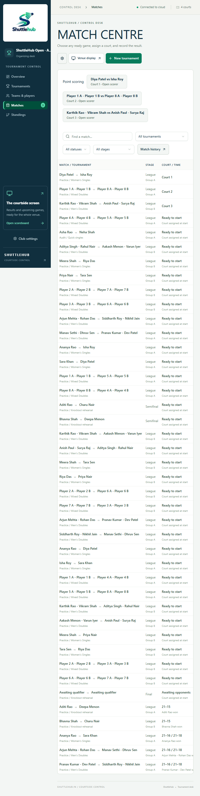
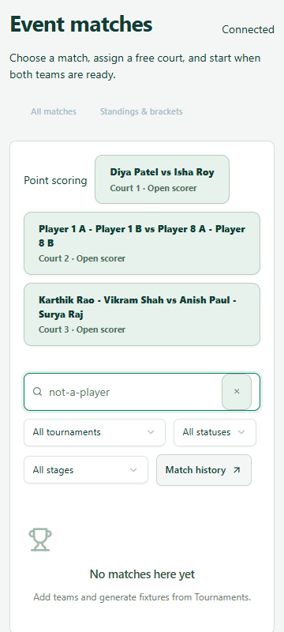
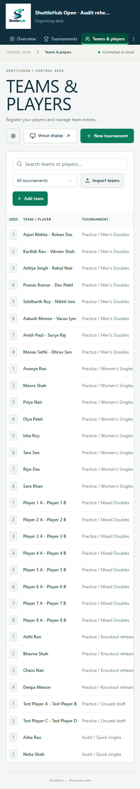
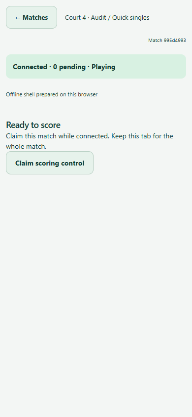
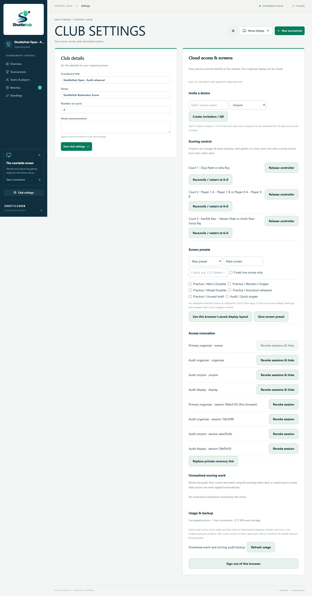
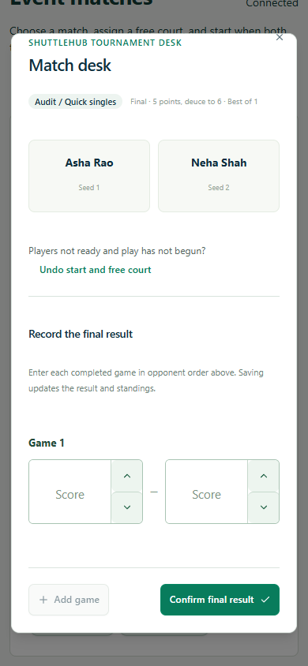
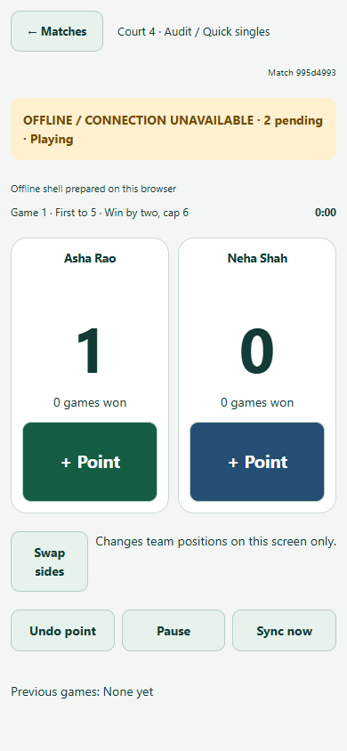

Diya PatelIsha Roy
UI only. Same workflows, rules and permissions.
All matches remains the umpire's home. Start → choose court → start match → open scorer → claim control stays intact. No assignment feature, new search fields, new backend, sorting or scheduling behavior. Purple numbers are review annotations, not proposed product UI.
01 · A working desk with a clear hierarchy
A compact brand block gives the event a home. Match-day destinations come first. Select Overview or Matches to compare two screens in the same shell. Search, category, status, stage and reset work on the local sample.
Other navigation items illustrate existing destinations. Match action buttons are visual samples.
Matches
Find a match, assign a court and keep play moving.
42 of 42 matches 3
Players / tournamentStage / groupCourt / statusMatch actions 4
On-court shortcuts · 3 5
Existing scorer shortcuts for all on-court matches in the selected tournament. Search, status and stage apply to the main list.
Courtside
ShuttleHub Badminton Arena
6 categories
32 entries
3 on court
5 / 42 matches finished
On court now
Upcoming games
Player 4 A - Player 4 B
Player 5 A - Player 5 BPractice / Mixed Doubles · Group A
Player 5 A - Player 5 BPractice / Mixed Doubles · Group A
Asha Rao vs Neha ShahAudit / Quick singles · Group A
Recent results
Aditi Rao 21
Deepa Menon 15Practice / Knockout rehearsal · League
Deepa Menon 15Practice / Knockout rehearsal · League
Bhavna Shah 21
Charu Nair 15Practice / Knockout rehearsal · League
Charu Nair 15Practice / Knockout rehearsal · League
1Brand and event have different jobs
The actual logo sits in a compact tile beside the wordmark. The event name has its own block. Removes the oversized white logo plaque without replacing the identity.
2One shell, relevant actions
Connection and event stay stable. Page headings are readable rather than oversized. Tournaments owns New tournament; Matches owns its existing History destination.
3Clear filter scope
Visible labels, comfortable targets, counts and a separate reset. Search still matches the two player-derived team labels. No new search fields or sorting.
4Keep actions beside identity
Opponents use separate lines. On-court matches emphasize Open scorer while retaining Record result. On smaller content widths, each row becomes a complete card.
5A shortcut should save space
The existing shortcut list can expand when needed. It no longer pushes search and the first match far below the phone's initial viewport.
Readiness stays authoritative
Court/time labels use existing match values. This layout does not schedule automatically, estimate wait times, narrow umpire permissions or bypass start validation.
Organizer phone navigation
More contains the existing Tournaments, Teams & players, Club settings and Venue display links. At tablet sizes, a labelled menu drawer replaces the full sidebar. Match actions remain visible in cards.
02 · Same umpire journey, clearer screens
The three proposed screens below are UI studies. The fourth is the actual working scorer, retained as a reference. All matches stays accessible. No assignment or personal work filter is introduced.
A · Find the match
ShuttleHub OpenUmpire · Connected
Event matches
42 matches · On court firstAsha RaoNeha Shah
Audit / Quick singles · Group AMatchesHistoryStandings
Clear navigation and complete cards. Names, court and scoring action fit together. The existing saved-work section takes priority when there is pending or conflicting work.
B · Existing Start game dialog
Match deskClose returns to the same match list
Upcoming
Audit / Quick singles · League · Group A
Asha RaoNeha Shah
Choose a free court and start when both teams are ready.
Best of 1 · First to 5
Win by two · Cap 6
Win by two · Cap 6
Planned time is optional.
Same two actions. Save schedule and Start game retain their separate behavior. The final action area stays reachable above the phone keyboard; occupied courts remain unavailable.
C · Open scorer, then claim
Point scoringCourt 4 · Audit / Quick singles
← Matches
Ready to score
League · Group A
Asha RaoNeha Shah
● On court · Court 4Best of 1 · First to 5
Win by two · Cap 6
Win by two · Cap 6
Claim this match while connected. Keep this tab for the whole match.
Connected
Scoring control has not been claimed on this device.
Offline preparation message remains visible here, using its actual current state.
Identity before authority. The current props already provide the opponents. Showing them here reduces doubt without adding a confirmation step or changing control claims.
D · Keep the working scorer

Observed application screenshot. Preserve point-button placement, side identities, storage-before-score feedback and every scoring action. Limit changes to surrounding typography, status separation and return context.
03 · A restrained sports identity
System typography, stable surfaces and semantic color. Green means action or on-court state; amber is reserved for a condition requiring attention. State always includes text.
Structure / primary text#102F3E · Navy
Primary action#087C5C · Green
On court / success#E4F4EC + #075E46
Pending / offline#FFF4D6 + #795000
Failure / destructive#FDECEF + #A12B32
Typography and spacing
30 px desktop / 26 px phone titles. Body 14–16 px; metadata 13 px. Four-pixel spacing base, 16 px card padding, 24 px section gaps. Preserve large tabular score numerals.
Touch and keyboard
44 px targets, 48 px phone primary actions, 16 px input text. Visible focus, readable active navigation and no hover-only instructions. Retain Radix dialog semantics.
Purposeful feedback
120–160 ms dialog/disclosure transitions, immediate filter updates and specific action feedback. No animated score counters. Reduced-motion preference disables movement.
04 · What the audit observed
Real local-cloud screenshots. Click any image for its full resolution. These are not proposed designs. The full plan includes severity, affected roles, source paths and acceptance criteria.


U08–09 · Uneven attention
The 143 px logo block and oversized heading compete with operations. Existing live court cards are a useful foundation, not something to discard.


U02–03 · Faint nav, long preamble
Navigation uses a pale sidebar color on a pale page. Repeated live shortcuts push search to y≈472 and row actions to y≈800.


U01 · Tablet actions hidden
The document fits, but the table does not. Organizer actions begin beyond the 768 px viewport, inside a horizontal scrolling region.


U04 · Wrong empty-state advice
A search with no matches tells the umpire to add teams and generate fixtures. Query results need a clear reset, not setup instructions.


U01 · Team editing off-screen
Names and category consume the table's initial view. Cards should retain seed, group and edit actions together without lateral scrolling.


U05 · Claim lacks match identity
The court and category are shown, but opponent names appear only after claiming. The proposed preclaim card uses existing data.


U10 · Settings mixes many tasks
Invitations, control, screens, access, recovery and backup share one long column. Section navigation can organize them without changing access or actions.


Preserve validation
The app correctly rejects blank scores. Improve the placement and field association of errors while keeping this safeguard intact.


Preserve offline confidence
Pending work and undo survived the local offline rehearsal. Status clarity can improve; storage, ordering and acceptance semantics stay unchanged.